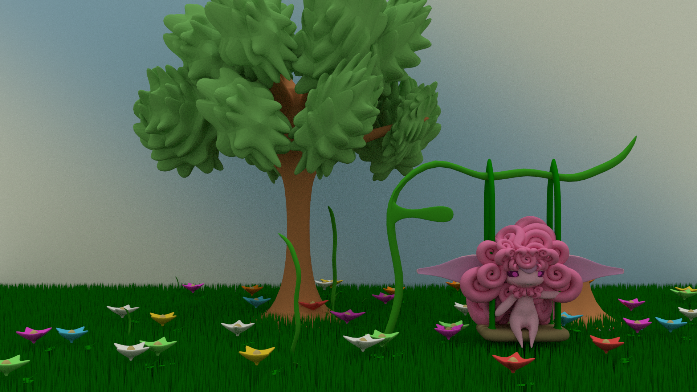
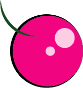
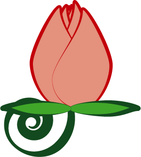
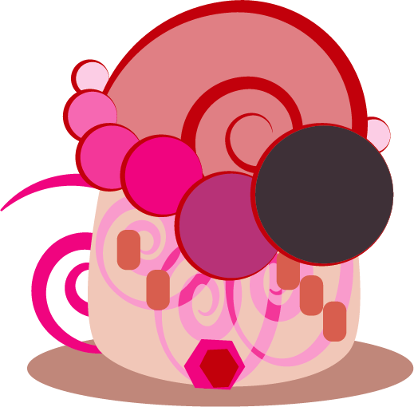

Their eyes are a lovely shade of purple, with the ability to control the plants around them. Their love of beautiful things like flowers and high-quality cloths drives them adapt to a lifestyle of narcissistic needs. They need to be just as beautiful as the plants they tend to be happy, but Pretar, a lust imp with a scar, wonders if this is true.
A Lust Imp in a field or vines and flowers that it created.
The Lustful imps turned their obsessive fixations on things, into potions that can lead and distract monsters and animals. Their bodies are also composed of plant matter, and pollen (produced by males) can help other plants and flowers grow. Their obsessive natures for focusing on their needs leads them to regrow trees in deforested areas with their pollen and control over animals helps animals stay calm as they either lead them back into to forest or herd them away for farming. They are all vegetarians, due to their inability to take life, as they desire to see things live and dead things lack desire and passion. They admire the Wrathful imps’ abilities to dive in head first and give there all, the greedy imps fixation on acquiring wealth fascinates them but the Slothful imps annoy them with their lack of motivation and passive natures.
Lust imps eat sweet fruit that that can be dried and turned into a candy-like food.
Lust imps can grow flowers and wear the most vibrant flowers that they've spawned for all to see.
These gems are used as decoraions and can be grounded into dust and infused with the Lust imp's obsessive natures. This magic dust is used to make enemies distracted while the Lust Imp runs away or kills their victim.
A house usually found in the Lust village, it's materals are very deliquite.